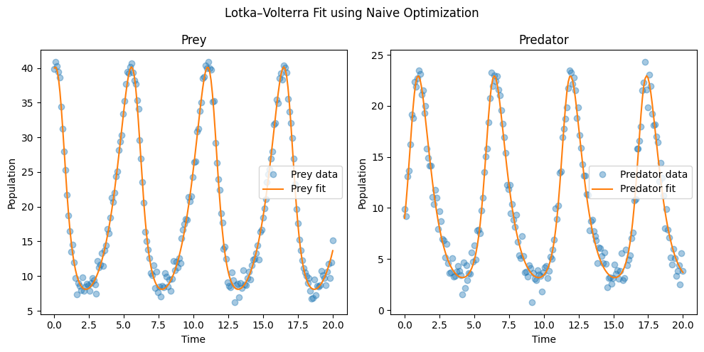

Lotka窶天olterra Case Study#
Data source:#
This example only uses simulated dataset to show the efficacy of InvODE.
[1]:
import numpy as np
from scipy.integrate import odeint
import matplotlib.pyplot as plt
import os
import sys
import scipy.io
[2]:
# Get path to MCMCwithODEs_primer (3 levels up)
project_root = os.path.abspath(os.path.join(os.getcwd(), '..'))
sys.path.insert(0, project_root)
In this example, we simulate the classic Lotka-Volterra model using chosen values of parameter set, add additive Gaussian noise to the time series and treat this in-silico time series as raw data for pointwise inference. The model of prey, \(x\) and predator \(y\) is given by,
\[\frac{dx}{dt} = \alpha x -\beta xy\]
\[\frac{dy}{dt} = \delta xy -\gamma y\]
[3]:
def lotka_volterra(z, t, params):
x, y = z
alpha = params['alpha']
beta = params['beta']
delta = params['delta']
gamma = params['gamma']
dxdt = alpha * x - beta * x * y
dydt = delta * x * y - gamma * y
return [dxdt, dydt]
[4]:
true_params = {
'alpha': 1.0, # prey growth rate
'beta': 0.1, # predation rate
'delta': 0.075, # predator growth per prey eaten
'gamma': 1.5 # predator death rate
}
t = np.linspace(0, 20, 200)
z0 = [40, 9] # initial population: 40 prey, 9 predators
[5]:
true_sol = odeint(lotka_volterra, z0, t, args=(true_params,))
noisy_data = true_sol + np.random.normal(0, 1.0, true_sol.shape)
Fitting the dataset with InvODE#
[6]:
def simulate_model(params):
sol = odeint(lotka_volterra, z0, t, args=(params,))
return sol # shape: (N, 2)
def mse(output):
return np.mean((output - noisy_data)**2)
In this example, we show that only a wide parameter bound is sufficient to infer parameters. Unlike many other packages, we do not need to provide an initial guess. The paramter range is kept wide intentionally for demonstration.
[7]:
param_bounds = {
'alpha': (0.5, 10),
'beta': (0.05, 0.9),
'delta': (0.05, 0.9),
'gamma': (1.0, 5.0)
}
[8]:
import sys
sys.path.append('./..') # or absolute path if needed
from invode import ODEOptimizer, lhs_sample
[9]:
# Run optimizer
optimizer = ODEOptimizer(
ode_func=simulate_model,
error_func=mse,
param_bounds=param_bounds,
seed=42,
num_top_candidates=3
)
[10]:
optimizer.fit()
Fitting Progress: 100%|█████████████████████████████████████████████████| 10/10 [00:03<00:00, 2.95it/s]
[10]:
({'alpha': 1.0070617604208139,
'beta': 0.10106403078501716,
'delta': 0.07518141959837712,
'gamma': 1.4907334496088311},
1.017800634314326)
[11]:
optimizer.summary()
🔍 ODEOptimizer Summary:
ode_func: simulate_model
error_func: mse
param_bounds: {'alpha': (0.5, 10), 'beta': (0.05, 0.9), 'delta': (0.05, 0.9), 'gamma': (1.0, 5.0)}
initial_guess: {'alpha': 5.25, 'beta': 0.47500000000000003, 'delta': 0.47500000000000003, 'gamma': 3.0}
n_samples: 100
num_iter: 10
num_top_candidates: 3
do_local_opt: True
local_method: L-BFGS-B
shrink_rate: 0.5
parallel: False
local_parallel: False
verbose: False
verbose_plot: False
seed: 42
best_error: 1.017800634314326
best_params: {'alpha': 1.0070617604208139, 'beta': 0.10106403078501716, 'delta': 0.07518141959837712, 'gamma': 1.4907334496088311}
[12]:
optimizer.plot_error_history()
[13]:
optimizer.best_params
[13]:
{'alpha': 1.0070617604208139,
'beta': 0.10106403078501716,
'delta': 0.07518141959837712,
'gamma': 1.4907334496088311}
[14]:
optimizer.best_error
[14]:
1.017800634314326
[15]:
history = optimizer.get_top_candidates_history()
# Example: print best candidate from each iteration
for i, candidates in enumerate(history):
print(f"Iteration {i+1}: Best error = {candidates[0][1]:.4f}")
Iteration 1: Best error = 205.4939
Iteration 2: Best error = 146.2435
Iteration 3: Best error = 122.2815
Iteration 4: Best error = 38.3478
Iteration 5: Best error = 18.4092
Iteration 6: Best error = 50.1976
Iteration 7: Best error = 12.9517
Iteration 8: Best error = 30.5593
Iteration 9: Best error = 50.5512
Iteration 10: Best error = 26.4215
If we wanted to explore what parameters were sampled and chosen on the way towards optimization, we can dig into it.
[16]:
df = optimizer.get_top_candidates_table()
print(df)
iteration rank error alpha beta delta gamma
0 1 1 205.493950 4.635283 0.548670 0.272194 3.750834
1 1 2 216.311914 3.948483 0.639474 0.266935 3.296262
2 1 3 222.192257 3.143117 0.334123 0.277048 2.619616
3 2 1 146.243488 6.541759 0.669410 0.176117 3.965542
4 2 2 152.667569 3.694805 0.448981 0.095968 2.381629
5 2 3 152.875367 4.592497 0.524295 0.146545 3.973435
6 3 1 122.281547 1.667789 0.482981 0.145486 1.406716
7 3 2 128.026079 3.239774 0.298372 0.075456 1.800184
8 3 3 138.298442 4.021883 0.458061 0.139802 3.099533
9 4 1 38.347757 1.501547 0.157396 0.096360 1.188872
10 4 2 66.360753 1.113214 0.313581 0.092433 1.601306
11 4 3 105.272729 1.100925 0.343522 0.162367 2.142834
12 5 1 18.409228 1.221271 0.188816 0.071793 1.239034
13 5 2 62.934063 0.757612 0.173760 0.208879 2.972718
14 5 3 77.399162 1.050500 0.111615 0.069860 1.256183
15 6 1 50.197585 1.509966 0.133063 0.101699 1.197996
16 6 2 52.663803 1.240501 0.234195 0.096619 1.421084
17 6 3 64.199690 1.195991 0.279601 0.052210 1.229068
18 7 1 12.951683 0.818549 0.082426 0.081083 1.861002
19 7 2 17.754232 0.732057 0.097124 0.129818 2.363097
20 7 3 25.901950 1.454759 0.170437 0.073618 1.060169
21 8 1 30.559292 1.102807 0.121274 0.113574 1.619607
22 8 2 31.593533 1.566777 0.165080 0.082514 1.096553
23 8 3 45.350923 0.760460 0.185158 0.108213 2.202863
24 9 1 50.551166 0.680582 0.058895 0.122742 2.325857
25 9 2 79.519415 1.078495 0.083594 0.135380 1.802685
26 9 3 86.748602 0.916940 0.247304 0.187210 2.566774
27 10 1 26.421453 0.548331 0.068029 0.145102 3.148164
28 10 2 37.848831 0.821639 0.124792 0.061638 1.615578
29 10 3 61.760456 1.088029 0.242015 0.103394 1.653540
[17]:
best_params = optimizer.best_params
[18]:
best_fit = simulate_model(best_params)
plt.figure(figsize=(10, 5))
plt.subplot(1, 2, 1)
plt.plot(t, noisy_data[:, 0], 'o', alpha=0.4, label='Prey data')
plt.plot(t, best_fit[:, 0], label='Prey fit')
plt.xlabel("Time")
plt.ylabel("Population")
plt.legend()
plt.title("Prey")
plt.subplot(1, 2, 2)
plt.plot(t, noisy_data[:, 1], 'o', alpha=0.4, label='Predator data')
plt.plot(t, best_fit[:, 1], label='Predator fit')
plt.xlabel("Time")
plt.ylabel("Population")
plt.legend()
plt.title("Predator")
plt.suptitle("Lotka窶天olterra Fit using Naive Optimization")
plt.tight_layout()
plt.show()

[ ]: